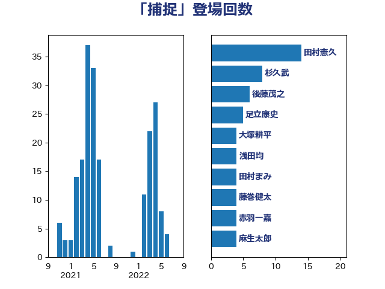

単語「捕捉」

| 田村憲久 | 自由民主党 | 14 回 |
| 杉久武 | 公明党 | 8 回 |
| 後藤茂之 | 自由民主党 | 6 回 |
| 足立康史 | 日本維新の会 | 5 回 |
| 大塚耕平 | 国民民主党 | 4 回 |
| 浅田均 | 日本維新の会 | 4 回 |
| 田村まみ | 国民民主党 | 4 回 |
| 藤巻健太 | 日本維新の会 | 4 回 |
| 赤羽一嘉 | 公明党 | 4 回 |
| 麻生太郎 | 自由民主党 | 4 回 |
| 平井卓也 | 自由民主党 | 3 回 |
| 柴田巧 | 日本維新の会 | 3 回 |
| 倉林明子 | 日本共産党 | 2 回 |
| 吉田統彦 | 立憲民主党 | 2 回 |
| 大島敦 | 立憲民主党 | 2 回 |
| 金子恭之 | 自由民主党 | 2 回 |
| 上野通子 | 自由民主党 | 1 回 |
| 中山展宏 | 自由民主党 | 1 回 |
| 中西健治 | 自由民主党 | 1 回 |
| 井上信治 | 自由民主党 | 1 回 |
| 伊東信久 | 日本維新の会 | 1 回 |
| 伊波洋一 | 無所属 | 1 回 |
| 佐々木さやか | 公明党 | 1 回 |
| 原口一博 | 立憲民主党 | 1 回 |
| 大家敏志 | 自由民主党 | 1 回 |
| 安江伸夫 | 公明党 | 1 回 |
| 宮澤博行 | 自由民主党 | 1 回 |
| 宮路拓馬 | 自由民主党 | 1 回 |
| 小寺裕雄 | 自由民主党 | 1 回 |
| 山崎誠 | 立憲民主党 | 1 回 |
| 山本左近 | 自由民主党 | 1 回 |
| 岡本あき子 | 立憲民主党 | 1 回 |
| 櫻井周 | 立憲民主党 | 1 回 |
| 江田憲司 | 立憲民主党 | 1 回 |
| 沢田良 | 日本維新の会 | 1 回 |
| 河西宏一 | 公明党 | 1 回 |
| 浅野哲 | 国民民主党 | 1 回 |
| 浜地雅一 | 公明党 | 1 回 |
| 牧島かれん | 自由民主党 | 1 回 |
| 田中健 | 国民民主党 | 1 回 |
| 田畑裕明 | 自由民主党 | 1 回 |
| 福山哲郎 | 立憲民主党 | 1 回 |
| 秋野公造 | 公明党 | 1 回 |
| 緒方林太郎 | 無所属 | 1 回 |
| 舞立昇治 | 自由民主党 | 1 回 |
| 藤田文武 | 日本維新の会 | 1 回 |
| 西村康稔 | 自由民主党 | 1 回 |
| 角田秀穂 | 公明党 | 1 回 |
| 赤木正幸 | 日本維新の会 | 1 回 |
| 逢坂誠二 | 立憲民主党 | 1 回 |
| 鈴木俊一 | 自由民主党 | 1 回 |
| 鎌田さゆり | 立憲民主党 | 1 回 |
| 階猛 | 立憲民主党 | 1 回 |
| 高木かおり | 日本維新の会 | 1 回 |
| 高木啓 | 自由民主党 | 1 回 |
| 高橋光男 | 公明党 | 1 回 |